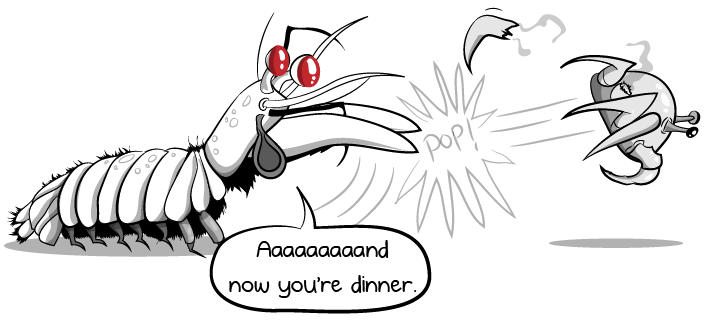

Fatos sobre o Stomatopoda

Quem é esse animalzinho?
- Científico: Odontodactylus scyllarus
- Reino: Animalia
- Filo: Arthropoda
- Subfilo: Crustacea
- Classe: Malacostraca
- Subclasse: Hoplocarida
- Ordem: Stomatopoda
O que são?
Os estomatópodes são predadores ativos que caçam presas com o auxílio de um sentido de visão muito apurado e capaz de interpretar polarização no espectro ultravioleta e infravermelho. Outro fato interessante, ele tem um socão extremamente forte que pode atingir 80km/h!
Onde vivem?
Eles vivem em fundo consolidado, lodoso ou ainda arenoso, onde cavam seus buracos ou aproveitam-se dos orifícios deixados por outros animais para neles se instalar.

Referência Bibliográfica
Wikipédia. Stomatopoda. Disponivel em: https://pt.wikipedia.org/wiki/Stomatopoda
Planet Animal Zone. Mantis Shrimp Amazing Bealtiful. Disponivel em: http://planetanimalzone.blogspot.com/2012/05/mantis-shrimp-amazing-beautiful.html
Youtube. Mantis Shrimp Packs a Punch | Predator Paradise. Disponivel em: https://www.youtube.com/watch?v=E0Li1k5hGBE